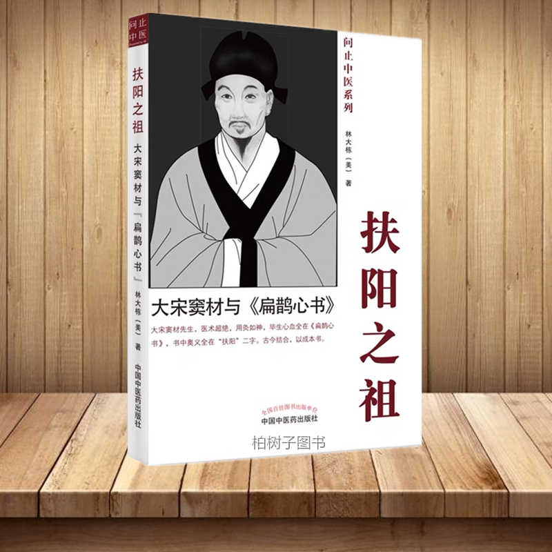

扶陽之祖_大宋竇材的扁鵲心書

大漢仲景，大宋竇材，本為異時瑜亮。前之《傷寒論》，立經方千年紀綱，後之《扁鵲心書》，傳扶陽百世心法。然伸景為世所重，尊為醫聖，竇師沒於時光，人多不識。此書目的，正在披沙揀金，將《扁鵲心書》之扶陽精髓傳於世間，以慰先賢濟世慈心。
本書作者與《扁鵲心書》的因緣，可前溯十年，彼時同門張孟超師兄搶先發售為他展示此書。初看其書，頗覺偏激，待沉心細品，只覺滋味無窮。後驗之於臨床，方知渾金璞玉，沒於泥沙。竇師重灸，長於扶陽，術簡效宏，屢起沉屙，然才高心高，睥睨當世醫者。甚則仲景先師亦不入眼，我等後學，只可取泥中清蓮，不可效習氣之偏。
本書中作者對竇材的核心學術觀點和醫技予以辨證分析，令人從獨特視角審視中醫內核。由於竇材醫術高超，卻喜貶低仲景，二者實乃醫界一時瑜亮，而盲人摸象，各見其偏，諸子泥執之處，正是深入杏林之路。
|